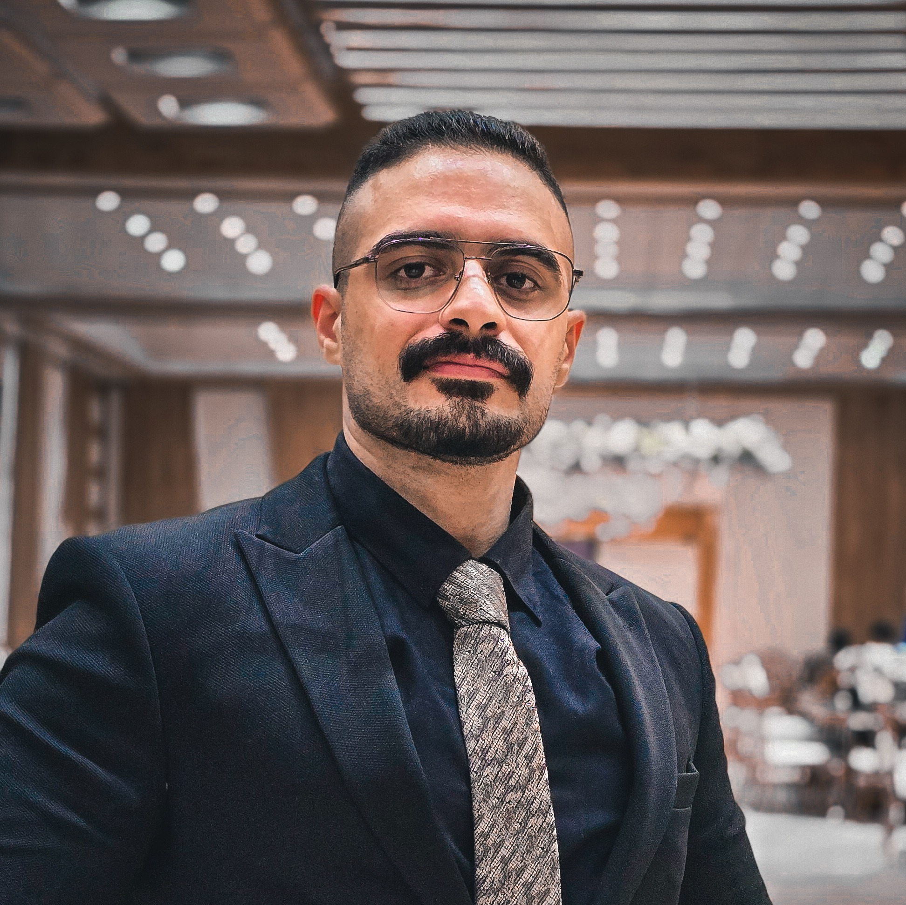

IT support & operations
Resolving hardware, software, Windows, and user-access issues. Following incidents through diagnosis, coordination, and reporting.
I’m Muhanad Al Habeeb. I troubleshoot networks, support people, and help maintain dependable IT infrastructure — while building my path into Linux system administration.

Years across IT support,
telecom & operations
Support tickets resolved
at Earthlink
Main buildings supported
as part of the IT team
Hands-on practice &
RHCSA exam preparation
Practical troubleshooting, clear communication, and a growing foundation in Linux administration.
Resolving hardware, software, Windows, and user-access issues. Following incidents through diagnosis, coordination, and reporting.
Supporting LAN/WAN connectivity, MikroTik devices, switches, VPN access, Cisco VoIP, and CCTV infrastructure.
Building practical system administration skills through RHEL labs, with a focus on services, security, storage, and persistence.
A background spanning technical support, IT operations, and telecommunications.
Support network and IT infrastructure across 15 main buildings and additional sites throughout Iraq as part of the IT team.
Prepared and maintained administrative documents and reports, managed document printing and organization, and supported daily administrative activities.
Conducted technical surveys of telecommunications tower sites, assisted with infrastructure inspections, and documented findings for technical reports.
Personal lab work in virtual machines, developed alongside my RHCSA preparation.
$ getenforce
Enforcing
$ systemctl is-active httpd
active
$ curl http://localhost:8090
Hello from RHEL!
Configured Apache to serve content from a custom document root on port 8090. Troubleshot startup errors, applied persistent SELinux labels, and verified the service after reboot.
Serve a test page from /webdata on TCP 8090 without disabling SELinux.
Configured Apache’s document root and listener, created the missing content directory, applied persistent httpd_sys_content_t labels, assigned the port to http_port_t, and added a persistent firewall rule.
After reboot, the local HTTP request succeeded, Apache was enabled and active, SELinux remained enforcing, and the content labels persisted.
Scope: personal RHEL 10 / VMware lab. The localhost request verifies the local service; it does not by itself verify remote firewall access.
Linux storage · NFS & autofs · User permissions · Podman · Bash scripting
Al Nahrain University 2018 — 2022
Have an opportunity in IT support or infrastructure?
I’d be glad to connect.